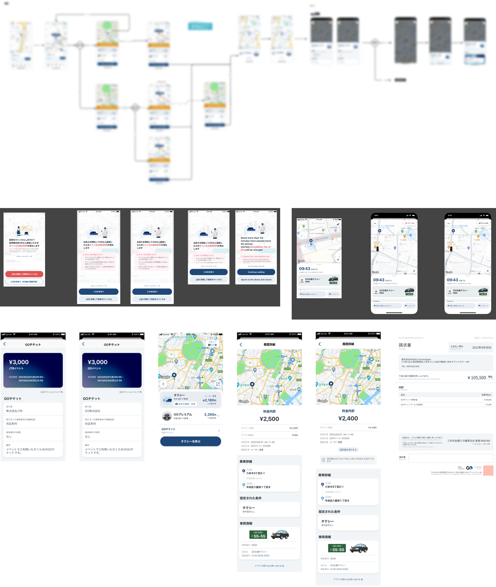

GO 個人向けタクシー配車手配サービス

タクシー配車アプリのUI開発と既存画面の改善
個人のスマートフォンからタクシーの配車依頼ができるサービス。メインで担当する法人向けサービス「GO BUSINESS」に絡む機能のUI開発、および実装されている既存画面の改善を担当しました。
- - 期間：2023年10月〜2025年5月
- - 役割：UI/UX
- - プロダクト：GO 個人向けタクシー配車手配サービス / GO BUSINESS
- - 使用ツール：Figma
作業内容と進め方
PdMと協業しながら、仕様や機能に適したUIの検討・提案から実装・検証までの一連のプロセスに関わりました。
01 仕様・UI検討
PdMと協業したUIの検討・提案
仕様や機能に適したUIを検討し、多角的な視点からデザインを提案。
02 フィードバック調整
レビューや仕様変更のすり合わせ
レビューや仕様変更の指摘を受けて、着地点をPdMと丁寧に擦り合わせ。
03 エンジニア連携
開発環境に合わせた仕様調整
エンジニアと連携後、場合によっては開発環境に合わせて柔軟に仕様を調整。
【User App】キャンセルを防ぐためのデザイン改善
車両迎車中のユーザーからのキャンセルを防ぐための改善に向けたデザイン検討を実施しました。検討したデザインはABテストを実施し、数値分析の結果、各画面平均して2%程度の改善が見られました。
- キャンセルを行うことで自身に起こる事象を理解できるようにすること
- 状況を理解した上で軽率なキャンセルを防ぎ、納得してキャンセルできること
- キャンセルを防ぎ、可能であればユーザーにそのまま待つことを促すこと
【GO BUSINESS関連】GOチケット
法人向けサービス「GO BUSINESS」に関連するGOチケット機能などの開発・UI設計を担当しました。

データ分析とUI設計を連動させた価値提供
ABテストの数値分析を基にしたUIのブラッシュアップや、PdM・エンジニアとの密な連携を通じて、ユーザーの離脱やキャンセルといったプロダクトの重要指標にアプローチするデザインの重要性を学びました。
単に見た目を整えるだけでなく、ユーザーの心理的障壁を取り除きつつ、ビジネス上の課題を解決するためのUI/UXデザインを引き続き追求していきます。